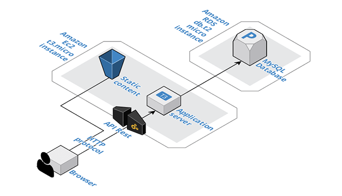

Amazon Web Services has been chosen for the architecture of Lemon Peel website.
The active services are two: Ec2 to run the server and Amazon RDS to configure a MySQL database.
The Ec2 instance (t3.micro) contains a running Node JS server created with Swagger and then modified to fit the needs of the application. Static contents are stored into the Ec2 machine and served by serve-static module, while it's possibile to retrieve the data stored into the database only through API calls.
The MySQL database, a db.m5.large instance created with Amazon RDS, is configured to be accessible only by the Ec2 machine for security reasons. To retrieve or send data, the clients must ask what they need to the server that will query the database and send back the responses.
The data with which the pages are filled are retrieved with AJAX calls to the NodeJS server, so that the HTML pages are not rendered server side but in the local machine of the user.
The backend of the application was entirely created with NodeJS. The skeleton has been generated by Swagger with Generate Server button in the Swagger editor. Then, with the help of knex module, the MySQL database has been connected to the server, safely storing its credentials using dotenv module.
Moreover, PM2 (Process Manager for NodeJS) is used on the server. It is configured to run the node application automatically when the machine starts, managing three instances of the server at the same time and acting as a load balancer between them.